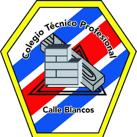
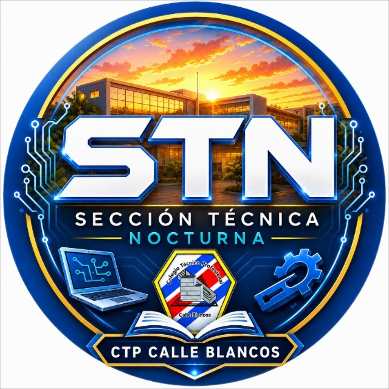
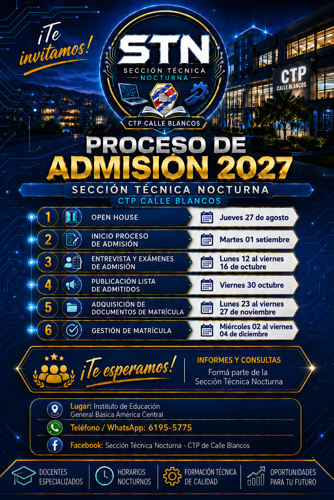

Jueves 27 de agosto
Open House
Conocé la Sección Técnica Nocturna y resolvé tus consultas.

STNCTP Calle BlancosAdmisión 2027 · Sección Técnica Nocturna
Estudiá, crecé y preparate para el mundo laboral con formación técnica de calidad en el CTP Calle Blancos.

Ruta de admisión activa. Conocé las fechas, reservá tu espacio para examen y completá la pre-matrícula desde cualquier dispositivo.
Ver calendario →Conocé la STN
Descubrí las especialidades técnicas y el ambiente de aprendizaje de la Sección Técnica Nocturna.

Calendario de admisión
Conocé la Sección Técnica Nocturna y resolvé tus consultas.
Completá tu registro de pre-matrícula.
La cita la agenda el docente desde su portal.
Oferta educativa
Sección Técnica Nocturna · Plan de tres años
Protegé sistemas, información y entornos digitales.
Gestioná procesos contables y decisiones financieras.
Impulsá relaciones, ventas y experiencias de servicio.
Formate en instalación, diagnóstico, control y mantenimiento de sistemas industriales.
Integra electricidad, mecánica, automatización y mantenimiento para la industria.
Diseñá, producí y emprendé con productos textiles industriales y creatividad aplicada.
Agenda docente
La entrevista y el examen se agenda desde el espacio privado de cada docente, según su especialidad y disponibilidad entre las 6:00 p. m. y las 9:00 p. m.
Ingresá al Portal para docentes y abrí la agenda de tu especialidad para crear, consultar o reprogramar citas.
Ir al Portal docente →Buzón STN
Un espacio de la comunidad para dudas sobre admisión, especialidades y vida estudiantil. No necesitás correo electrónico.
Visitar Facebook STN ↗Área institucional
Acceso a los registros cargados localmente, herramientas de organización y documentos informativos del equipo STN.
Abrir canal de Teams ↗Protección: esta versión es una demostración de interfaz que guarda información únicamente en el navegador. No subás datos personales reales hasta conectar autenticación, permisos y una base de datos institucional segura.